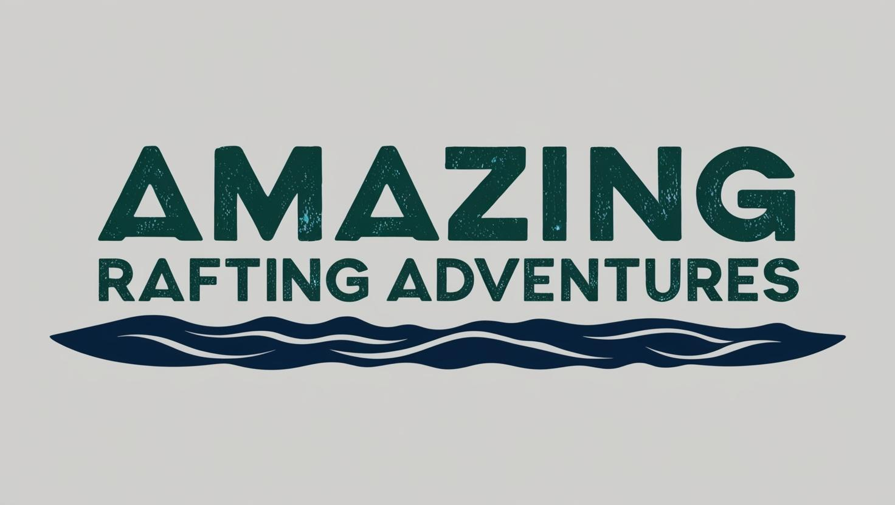

Overview
Purpose
Our growing business decided to start a website due to the increasing needs that can be met by an online presence. We hope to serve our customers better by advertising our services this way and giving the customer more access to our adventures. It should make it easier to reserve a spot on an adventure, check the schedule, book an adventure, or explore what we do. This will increase our revenue, customer satisfaction, educate the public on safety and best rafting practices, and share part of the adventure so it can be experienced from the website.
Audience
Our audience are the adventurous on the go type who could be accessing the website from their mobile phones and also those ready to try a new adventure. For those interested in trying a new adventure, they need to see it to show them what they can do. Experiencing part of the adventures through the website will help them see what it's like and motivate them to book their own adventure. They could be using any device; laptop, desktop, or phone to access. Phone access is very important because many adventurists may not have access to a computer, especially in the middle of an adventure.
Branding
Website Logo
Style Guide
Color Palette
Palette URL:
https://coolors.co/998d85-b2aba9-0a0326-f4f3ee-153608| Primary | Secondary | Accent 1 | Accent 2 |
|---|---|---|---|
| [#0a0326] | [#153608] | [#998d85] | [#b2aba9] |
Typography
Heading Font: Trade Winds
Paragraph Font: Dosis
Normal paragraph example
The best Whitewater Rafting in Colorado, White Water Rafting Company offers rafting on the Colorado and Roaring Fork Rivers in Glenwood Springs. Since 1974, we have been family owned and operated, rafting the Shoshone section of Glenwood Canyon and beyond.
Colored paragraph example
Trips vary from mild and great for families, to trips exclusively for physically fit and experienced rafters. No matter what type of river adventures you are seeking, White Water Rafting Company can make it happen for you.
Navigation
Site Map
Wireframes
Home